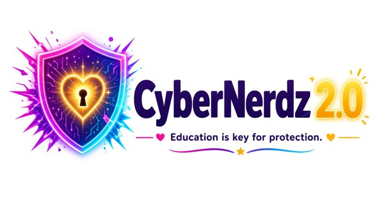

مدينة دالاس، 2023
يقول تقرير المدينة إن مهاجمي برامج الفدية دخلوا في 7 أبريل 2023 وبدأوا تشفير الخوادم في 3 مايو. ربما كُشفت المعلومات الشخصية لـ 30,253 شخصًا.
City of Dallas – After-Action Report, May 2023 ransomware incident (PDF)

نسخة مترجمة — النسخة الإنجليزية هي المرجع (ترجمة بمساعدة آلية).
إذا حدث لك هذا، فأنت لست وحدك وليس هذا خطأك. المحتالون محترفون يخدعون أشخاصًا طيبين وحذرين كل يوم. خطوة بخطوة. لا يجب أن تفعل كل شيء اليوم.
القراءة بصوت عالٍ غير متاحة في هذا المتصفح. يمكنك استخدام قارئ الشاشة في جهازك.
لا تدفع أبدًا فدية أو مبلغ ابتزاز.
لا تتفاوض أبدًا. لا ترد ولا تساوم.
التقط لقطات شاشة قبل حذف أي شيء: الرسائل، المذكرات، المعاملات، أسماء المستخدمين، التواريخ والأوقات.
علاماتك تُحفظ على هذا الجهاز فقط.
CISA – I've been hit by ransomware! · IdentityTheft.gov (FTC) · Equifax – Security freeze · Experian – Credit freeze · TransUnion – Credit freeze · AnnualCreditReport.com
لا تفتح الروابط في المذكرة. لا تتواصل ولا تدفع. التقط صورة، افصل الجهاز، وأبلغ الشرطة و IC3 و CISA.
IC3 – Ransomware · CISA – I've been hit by ransomware!
الحكومة لا تطلب أبدًا نقل أموالك إلى حساب "آمن" ولا نقدًا أو ذهبًا أو بطاقات هدايا أو عملات مشفرة. أغلق الخط واتصل بالرقم على بطاقتك.
FBI IC3 PSA – “Phantom Hacker” scams target senior citizens (Sept. 29, 2023) · FBI IC3 PSA I-012924-PSA – Scammers use couriers to retrieve cash and precious metals (Jan. 29, 2024)
عنوان IP وحده لا يمنح أحدًا السيطرة عليك أو على جهازك. إنها حيلة تخويف. لا تدفع، لا ترد، التقط صورًا وأبلغ.
FBI IC3 PSA – Online extortion scams (Apr. 20, 2020) · Traficom (Finnish Transport and Communications Agency) – Sextortion scams: don't believe the scammers' claims
غريب ودود يقودك إلى منصة مزيفة بأرباح مزيفة، ثم يطلب "ضرائب" أو "رسومًا" للسحب. توقف عن الدفع وأبلغ.
FinCEN Alert FIN-2023-Alert005 on “pig butchering” (PDF) · U.S. Department of Justice – Prince Group indictment and forfeiture (Oct. 14, 2025)
لا تمسح رمز QR غير متوقع لـ"دعوة مجموعة"، لا تشارك أي رمز، لا توافق على تسجيل دخول لم تبدأه. احذف الأجهزة المرتبطة المجهولة.
Google Threat Intelligence – Russia-aligned actors targeting Signal “linked devices” (Feb. 2025) · Microsoft Threat Intelligence – Storm-2372 device code phishing (Feb. 13, 2025)
لا تضغط. تحقق من التطبيق الرسمي. حوّل الرسائل إلى 7726 والبريد إلى reportphishing@apwg.org.
U.S. Postal Inspection Service – Smishing: package tracking text scams · Anti-Phishing Working Group – Report phishing emails
شخص لم تقابله أبدًا يطلب مالًا أو استثمارًا. توقف عن الإرسال وتحدث مع شخص تثق به.
ReportFraud.ftc.gov (Federal Trade Commission) · FBI Internet Crime Complaint Center (IC3)
نحن آسفون جدًا لفقدانك. دار الجنازات لا تفرض رسومًا لمجرد مشاهدة المراسم. اطلب الرابط الحقيقي من دار الجنازات مباشرة.
WGEM News – BBB warns of fake funeral livestream pages (Jan. 2024)
خط تكساس للإبلاغ عن الإساءة 1-800-252-5400 أو txabusehotline.org. خط احتيال كبار السن 833-FRAUD-11.
Texas Abuse Hotline (Texas DFPS – Adult Protective Services) · National Elder Fraud Hotline (U.S. DOJ, Office for Victims of Crime)
أجب عن بعض الأسئلة. لا يغادر أي شيء هذه الصفحة.
يقول تقرير المدينة إن مهاجمي برامج الفدية دخلوا في 7 أبريل 2023 وبدأوا تشفير الخوادم في 3 مايو. ربما كُشفت المعلومات الشخصية لـ 30,253 شخصًا.
City of Dallas – After-Action Report, May 2023 ransomware incident (PDF)
تلقى FBI عدد 19,000 شكوى احتيال دعم فني من يناير إلى يونيو 2023، بخسائر تجاوزت 542 مليون دولار. نحو نصف الضحايا فوق 60 عامًا.
FBI IC3 PSA – “Phantom Hacker” scams target senior citizens (Sept. 29, 2023)
أعلنت وزارة العدل اتهامات تتعلق بمجمعات احتيال بالعمل القسري ودعوى مصادرة لنحو 127,271 بيتكوين. الاتهامات مجرد ادعاءات.
U.S. Department of Justice – Prince Group indictment and forfeiture (Oct. 14, 2025)
إذا أردت أن يطّلع شخص على ما حدث، راسلنا. هذه خدمة عامة مجانية.
✉️ راسلنا لطلب المساعدة help@cybrenerdz.com
يُدار هذا الموقع مجانًا كخدمة عامة. التبرعات موضع تقدير لكنها ليست مطلوبة أبدًا. التبرعات غير قابلة للخصم الضريبي (لسنا جمعية خيرية مسجلة). المساعدة لا تتوقف أبدًا على الدفع.
مرحبًا، أنا فيرونيكا، متخصصة في الأمن السيبراني ولدي خبرة عملية في مكافحة الاحتيال. الأمن السيبراني وحماية الآخرين شغفي. أنشأت هذا الموقع مجانًا لأنه لا ينبغي لأحد أن يواجه الاحتيال وحده، والتعليم هو مفتاح الحماية.